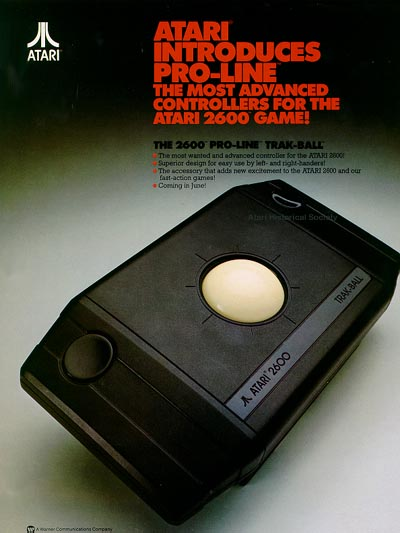

The
Atari Trakball Concepts (A look at the original Designs)

Another superb home version of the trakball. Again Dan
Kramer and Levon Mitchell did the electro-mechanicals on this controller
and also did a special version (the Dan-Levon version :-) for the Atari
home computers that when used with Missle Command and press CTRL-T would
put the game into a true Trakball mode and allow the game to be played
perfectly. If there was one thing Atari knew how to do
well for its home console, then designing and selling Trakballs was definitely
one of them. The Trakball, although originally designed for
the Atari 2600, could also be used on the Atari 400/800, XL/XE computers
and also the Atari 7800 PROsystem. Two version were available,
the CX-80 (shown above) and the CX-22 with selector switch to go from joystick
to trakball mode.